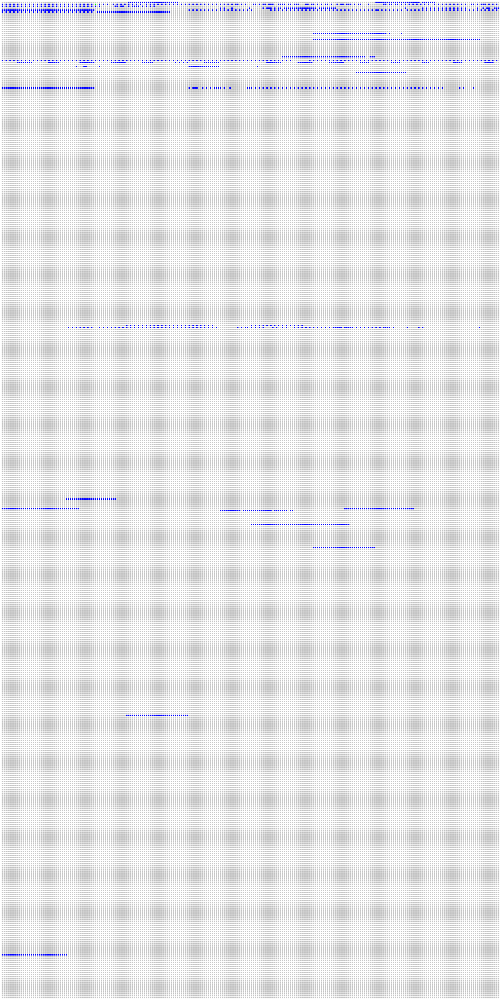

| Author: | Wojciech Muła |
|---|---|
| Added on: | 2025-02-02 |
Contents
Changing letters case is something that appear handy in many situations, for instance input normalization, parsing, and other text-related tasks.
When we are dealing with ASCII, such conversion is straightforward. We check if a character code lies in the range 'a' .. 'z' (or 'A' .. 'Z') and when its true, we toggle the 5th bit (0x20).
But in the case of Unicode-encoded strings it is not that simple. There are many code points having upper- or lowercase counterparts, and they are not placed in any regular way in the Unicode code space. Although we may identify shorter or longer ranges of such codes, similarly to Latin letters in ASCII, this does not help much. See appendixes A, B and C, where we visualize how these characters are located.
Additionally, there are cases where an uppercase or lowercase version of the given character is not a single character, but a string. These strings are short, have two or three Unicode points. For example the uppercase of "Latin small ligature ffi" (ffi) is a three-character string "FFI".
| 1 code point | 2 code points | 3 code points | total | |
|---|---|---|---|---|
| uppercase | 1423 | 86 | 16 | 1525 |
| lowercase | 1432 | 1 | 0 | 1433 |
| 1 code point | 2 code points | 3 code points | total | |
|---|---|---|---|---|
| uppercase | 1383 | 86 | 16 | 1485 |
| lowercase | 1392 | 1 | 0 | 1393 |
There is one thing that makes our task easier: while the Unicode codes span the range 0..0x10ffff, we can check that only characters up to 0x1ffff may have different codes due to case change.
The outline of case change algorithm for UTF-32 encoded strings can be written as follows.
void utf32_uppercase(const uint32_t *input, size_t n, uint32_t *output) { size_t j = 0; for (size_t i=0; i < n; i++) { // fetch the character code const uint32_t src_code = input[i]; if (has_uppercase_variant(src_code)) { switch (uppercase_letters_count(src_code)) { // the majority: single character case 1: output[j++] = uppercase(src_code); break; // rare cases: strings case 2: output[j++] = uppercase(src_code)[0]; output[j++] = uppercase(src_code)[1]; break; case 2: output[j++] = uppercase(src_code)[0]; output[j++] = uppercase(src_code)[1]; output[j++] = uppercase(src_code)[2]; break; } } else { // no upper output[j++] = src_code; } } }
There are different ways to implement this algorithm, we list a selection of them.
We may auto-generate a huge switch statement and let the compiler do all the hard job. It's not naive approach, as compilers are getting better and better. Refer to a great presentation Hans Wennborg: C++ switch statements under the hood in LLVM.
Perfect hashing functions are really great (see Modern perfect hashing for strings), although they do not fit well to this particular problem. Lookup in a hash table requires two steps:
const uint32_t src_code = input[i]; const size_t h = perfect_hash_function(src_code); if (hash_table[h].src_code == src_code) { output[j++] = hash_table[h].dst_code; } else { output[j++] = src_code; // no changes to the character }
The first problem is finding a cheap perfect hash function, as we have to evaluate it for every character. We tried to find something like ((character code * M) >> N) & mask, where M, N and mask are compile time constants. The best hash function returned value ~8100. This means hash table size would be approx 126kB, while we can reduce auxiliary table sizes to ~26kB using simpler techniques.
The second problem is related to vectorization — fetching table entries require using VPGATHERDD. Our input are vectors of 4-byte character codes, but the size of hash table entry is 8 bytes. Thus we would need to issue gather instruction twice: either to fetch separately two halves of entries, or fetch 8-byte entries for characters at odd/even indices of the input.
Lookup tables addressed directly by the character code seems to be the best option.
An obvious solution is to have tables of size 0x1ffff, that is 131'072 entries. Than the lookup costs us only check the range and a single memory fetch.
const uint32_t src_code = input[i]; if (src_code < 0x1'ffff) { output[j++] = lookup[src_code]; } else { output[j++] = src_code; }
The drawback is size of a single table: 131'072 * 4 bytes = 524'288 bytes. 512kB exceeds usual sizes of L1 cache and cache misses may kill performance. Of course, we can come up with scenarios where this is not a problem. For example, if we're dealing with texts written in one language, we effectively will use only a small portion of the tables. But when we cannot assume anything about the text source, having 1MB of auxiliary tables does not seem to be a right solution. Also, when case changing is only a part of bigger system, huge lookup tables might be a problem.
It is possible to compress lookup tables. We know that only a small fraction of codes are being altered during case changing, thus we can rule out a huge number of character codes. We split a character code into higher and lower parts. The higher order bits are used to distinguish between ranges of codes having none or some characters to change. If the characters from the given range are not changed, we simply do not save that range.
The lower part of character code is used as a local offset within the selected range.
A simplified algorithm is shown below.
const uint32_t src_code = input[i]; if (src_code < 0x1'ffff) { constexpr int N = some_predefined_const; const uint32_t hi = src_code >> N; const uint32_t lo = src_code & ((1 << N) - 1); const uint32_t group_id = first_level_lookup[hi]; if (group_id != 0) { // `group_id + lo` may be a bit different expression, but generally // we combine somehow the lower bits with the `group_id`. const uint32_t dst_code = second_level_lookup[group_id + lo]; output[j++] = dst_code; } else { output[j++] = src_code; } } else { output[j++] = src_code; }
This solution also requires two lookups, so we are having exactly the same problem as in the case of perfect hashing function — two gathers. Not ideally, but compression allows us to shave significant portions of lookup tables when compared to the naive solution.
We said that a lookup table (single or compressed) is addressed by character codes, but what is stored in the table?
We may store there UTF-32 uppercase or lowercase codes directly. However, we may also store there already encoded UTF-8 characters, when the UTF-8 is desired encoding.
Another option is storing symmetrical differences (xor) between the source and destination codes. For uppercase we have 139 distinct differences, for lowercase 124. That is significantly fewer than the actual number of codes (1525 and 1433, respectively).
The conversion that uses differences requires just additional xor operation. And as we learn later on, this allows some nice tricks, including replacing one of memory gathers with an in-register shuffle (yes, PSHUFB!).
const uint32_t src_code = input[i]; if (src_code < 0x1'ffff) { output[j++] = src_code ^ lookup[src_code]; } else { output[j++] = src_code; }
We completely skip the problem of multi-character conversion results, assuming that tables would store either 4-byte values (for plain and compressed lookup tables) or 8-byte entries (for hash tables).
Since these multi-character strings appear relative rare, we propose to handle them separately. For these cases we store code 0x8000_0000 — that is: a negative value, easy to detect. If a negative number is the result of conversion, we are switching to the slowest path.
The slowest path may be done in different ways. When the lookup step yields a character code (not differences) then we may encode in the negative number more information. We need a separate auxiliary table that keep all resulting strings; just for remind, strings have two or three characters. Our negative number keeps also the length and the exact offset to the auxiliary table, as follows:
The expression code >> 30 yields the length, and code & 0xff the offset. A single byte for offset is enough, as the total length of the auxiliary table is 86 ⋅ 2 + 16 ⋅ 3 = 220.
A scalar conversion can be written as:
const uint32_t src_code = input[i]; if (src_code < 0x1'ffff) { const uint32_t dst_code = lookup[src_code]; if (int32_t(dst_code) < 0) { const uint32_t len = dst_code >> 30; const uint32_t ofs = dst_code & 0x1ff; switch (len) { case 2: output[j++] = replacements[ofs + 0]; output[j++] = replacements[ofs + 1]; break; case 3: output[j++] = replacements[ofs + 0]; output[j++] = replacements[ofs + 1]; output[j++] = replacements[ofs + 2]; break; } } } else { output[j++] = src_code; }
If we go for lookup tables or perfectly-hashed tables, we need to use the gather instruction. This instruction is available only in AVX and AVX-512 extensions of the Intel ISAs.
A common optimization, which is present almost everywhere in vectorized code of simdutf project, is checking whether a SIMD register contains only ASCII characters. This check is inexpensive, we need to test if all character codes are less than 128. When it is true, we choose a fast path — the fast path for changing case requires only two comparisons and conditional xor.
However, when at least one character is outside the ASCII range, we are forced to use a slower path.
When we hit the slow path, we might want to check whether any of the characters from SIMD registers would change. When nothing would change, we simply could copy the register contents to the output.
As the pictures in Appendix B and C suggest, there are many ranges of characters that are not altered during case changing. We may use higher order bits of code points to identify these ranges and avoid the slow path. Unfortunately, it doesn't work well in real world scenarios.
We used exactly the same datasets as the simdutf project: the Wikipedia article about the Mars in various languages. The languages are: Arabic, Chinese, Czech, English, Esperanto, French, German, Greek, Hebrew, Hindi, Japanese, Korean, Persian, Portuguese, Russian, Thai, Turkish and Vietnamese.
In our evaluation we process 8-character blocks of the input (eight UTF-32 characters fit in an AVX2 register). A block is first checked for ASCII characters. If there are some non-ASCII characters, we perform either uppercase of lowercase transformation on the block.
The following table summarizes the experiment. The column "ASCII" says what fraction of the input blocks went through the fast path. The last two columns: "changed case" and "not changed" show the slow path outcome — the fraction of blocks that were changed or not. As we can observe, in the case of European languages the majority of blocks is getting changed, while in Asian languages almost nothing got modified.
This results make the discussed optimization pointless.
| dataset | block size | blocks | ASCII | changed case | not changed |
|---|---|---|---|---|---|
| arabic | 8 | 28774 | 50.5% | 3.1% | 96.9% |
| chinese | 8 | 9101 | 58.1% | 11.2% | 88.8% |
| czech | 8 | 11363 | 63.3% | 96.4% | 3.6% |
| english | 8 | 22422 | 98.0% | 63.0% | 37.0% |
| esperanto | 8 | 7180 | 89.7% | 92.0% | 8.0% |
| french | 8 | 32883 | 79.4% | 92.7% | 7.3% |
| german | 8 | 16907 | 88.7% | 86.7% | 13.3% |
| greek | 8 | 9364 | 40.6% | 98.1% | 1.9% |
| hebrew | 8 | 8747 | 29.0% | 5.1% | 94.9% |
| hindi | 8 | 13881 | 39.0% | 6.0% | 94.0% |
| japanese | 8 | 6257 | 52.3% | 11.9% | 88.1% |
| korean | 8 | 5032 | 57.6% | 13.6% | 86.4% |
| persan | 8 | 7397 | 50.4% | 7.8% | 92.2% |
| portuguese | 8 | 19966 | 82.9% | 91.7% | 8.3% |
| russian | 8 | 24145 | 30.2% | 95.0% | 5.0% |
| thai | 8 | 20747 | 44.0% | 5.9% | 94.1% |
| turkish | 8 | 14747 | 66.9% | 98.4% | 1.6% |
| vietnamese | 8 | 20975 | 44.6% | 98.3% | 1.7% |
This is the first approach — use single, 512kB tables. To handle multi-character strings we used auxiliary lookup table, as discussed in the previous section.
The scalar code performing lookup is shown below. The input is UTF-32-encoded string, n is its length. The output should be big enough (n*3 is the safest & simplest to obtain size).
size_t utf32_uppercase_plain(const uint32_t* input, size_t n, uint32_t* output) { size_t j=0; for (size_t i=0; i < n; i++) { const uint32_t src = input[i]; if (likely(src <= 0x1'ffff)) { const uint32_t dst = UTF32_UPPERCASE_PLAIN[src]; if (unlikely(int32_t(dst) < 0)) { const size_t ofs = dst & 0x1ff; switch (dst >> 30) { case 2: output[j++] = UTF32_UPPERCASE_PLAIN_LONG_REPL[ofs + 0]; output[j++] = UTF32_UPPERCASE_PLAIN_LONG_REPL[ofs + 1]; break; case 3: output[j++] = UTF32_UPPERCASE_PLAIN_LONG_REPL[ofs + 0]; output[j++] = UTF32_UPPERCASE_PLAIN_LONG_REPL[ofs + 1]; output[j++] = UTF32_UPPERCASE_PLAIN_LONG_REPL[ofs + 2]; break; default: assert(false); } } else { output[j++] = dst; } } else { output[j++] = src; } } return j; }
The code is rather straightforward, the only unusual thing is marking branches with likely/unlikely (wrappers for __builtin_expect). This moved the handling of multi-character replacements out of the main loop.
In the case of lowercase operation, there is only one multi-character replacement, it can be handled directly. But it might not be a good solution, and better use table-based one. In the introduction we showed that the characters having different cases are added to the Unicode standard.
size_t utf32_lowercase_plain(const uint32_t* input, size_t n, uint32_t* output) { size_t j=0; for (size_t i=0; i < n; i++) { const uint32_t src = input[i]; if (likely(src <= 0x1'ffff)) { const uint32_t dst = UTF32_LOWERCASE_PLAIN[src]; if (unlikely(int32_t(dst) < 0)) { // there's exactly one replacement pair for lowercase // 'İ' => 'i̇' (2) output[j++] = 0x0069; output[j++] = 0x0307; } else { output[j++] = dst; } } else { output[j++] = src; } } return j; }
This section describes the solution we used at Sneller. We purposely omitted the mutli-character replacements as too complex for our needs at the moment of creating the product.
The values in range 0 .. 0x1_ffff can be saved on 17 bits. We split the 17-bit character code into two parts: higher 9-bit (row), and lower 8-bit (column). For each of 512 possible higher order bit combinations, we collect all 256 lower- or uppercase character codes; we are collecting codes for range 0x000_00 .. 0x000_ff, then 0x001_00 .. 0x001_ff, up to the range 0x1ff_00 .. 0x1ff_ff.
Then, for each group of 256 character codes (rows), we find the first and the last column where character codes got changed. We save only this range of characters, alongside the first and last index. Note that not all characters within a range are subject of case change — this is an additional storage cost we pay for simplicity.
Thus, the first level lookup contains 512 records with:
These three fields fit in a single 4-byte word. For unused entries we set an invalid range, having last < first; this saves us one extra check for invalid entries. For detailed info about the first level lookup, see appendix D.
The second level lookup contains arrays of 4-byte elements. At Sneller we stored UTF-8 encoded strings, as internally we used that encoding. In the experiments for this article, we store UTF-32 characters.
character 'ą' ┌─────────────┐ │ 00105 │ ╶───────────────────────────┐ └─────────────┘ │ | │ │ 1st level lookup │ 2nd level lookup │ ┌─────┬─────┬────────┐ │ ┌──────────────┐ │ │ min │ max │ offset │ │ ┆ ┆ │ ├─────┼─────┼────────┤ │ ┆ ┆ │ │ 61 │ ff │ 0 │ │ +5 ┆ ┆ │ ├─────┼─────┼────────┤ ▼ ├──────────────┤ └─▶│ 01 │ ff │ 159 │ ╶──╴159╶───▶◯╶──╴163╶──▶│ 00104 = 'Ą' │ #163 ├─────┴─────┴────────┤ ▲ ├──────────────┤ ┆ │ ┆ │ -1 ┆ ┆ ┆ └───────────────╴ ┆ ╶───────────┘ ┆ ┆ ┆ 01 <= 05 <= ff ┆ ┆ ┆ ┆ ┆ ┆ ┆ └────────────────────┘ ┆ ┆ └──────────────┘
| table | entry size [bytes] | # entries | total [bytes] |
|---|---|---|---|
| first level table for uppercase | 4 | 2875 | 11500 |
| second level table for uppercase | 4 | 490 | 1960 |
| first level table for lowercase | 4 | 2749 | 10996 |
| second level table for lowercase | 4 | 490 | 1960 |
| auxiliary table for multi-character replacements (uppercase only) | 4 | 220 | 880 |
| total 27296 (~27kB) |
Below is shown the implementation.
size_t utf32_uppercase_compressed_v2(const uint32_t* input, size_t n, uint32_t* output) { size_t j=0; for (size_t i=0; i < n; i++) { const uint32_t src = input[i]; const uint32_t key = src >> 8; // use higher 9 bits if (unlikely(key >= UTF32_UPPERCASE_V2_MAX_HI_BITS)) { output[j++] = src; continue; } const uint32_t entry = UTF32_UPPERCASE_V2_OFFSET[key]; const uint32_t min = entry & 0xff; const uint32_t max = (entry >> 8) & 0xff; const uint32_t offset = entry >> 16; const uint32_t lo = src & 0xff; if (lo >= min && lo <= max) { const uint32_t dst = UTF32_UPPERCASE_V2_DATA[offset + lo - min]; if (likely(int32_t(dst) >= 0)) { output[j++] = dst; } else { const size_t ofs = dst & 0x1ff; switch (dst >> 30) { case 2: output[j++] = UTF32_UPPERCASE_PLAIN_LONG_REPL[ofs + 0]; output[j++] = UTF32_UPPERCASE_PLAIN_LONG_REPL[ofs + 1]; break; case 3: output[j++] = UTF32_UPPERCASE_PLAIN_LONG_REPL[ofs + 0]; output[j++] = UTF32_UPPERCASE_PLAIN_LONG_REPL[ofs + 1]; output[j++] = UTF32_UPPERCASE_PLAIN_LONG_REPL[ofs + 2]; break; default: assert(false); } } } else { output[j++] = src; } } return j; }
A simplification to the above method is storing the whole row, without dealing with the first & last index and logic required to handle them: a condition and more complex offset calculation.
The following table shows the analysis of lookup table size depending on high/low bits split. We will get the smallest tables for 11 higher/6 lower bits, or 10 higher/7 lower bits. They are approx ~50kB, which is ~2 times more than in the compressed table.
We may store the first level lookup on 16-bit values, that would save 2-3kB, but it's negligible amount of memory.
| # | higher bits | lower bits | row size [bytes] | uppercase 1st level entries | uppercase 2nd level entries | uppercase total size [bytes] | lowercase 1st level entries | lowercase 2nd level entries | lowercase total size [bytes] | total size [bytes] |
|---|---|---|---|---|---|---|---|---|---|---|
| 1 | 16 | 1 | 8 | 62,625 | 1,067 | 259,036 | 62,608 | 1,011 | 258,520 | 517,556 |
| 2 | 15 | 2 | 16 | 31,312 | 569 | 134,352 | 31,304 | 530 | 133,696 | 268,048 |
| 3 | 14 | 3 | 32 | 15,656 | 305 | 72,384 | 15,652 | 279 | 71,536 | 143,920 |
| 4 | 13 | 4 | 64 | 7,828 | 168 | 42,064 | 7,826 | 154 | 41,160 | 83,224 |
| 5 | 12 | 5 | 128 | 3,914 | 98 | 28,200 | 3,913 | 86 | 26,660 | 54,860 |
| 6 | 11 | 6 | 256 | 1,957 | 60 | 23,188 | 1,956 | 55 | 21,904 | 45,092 |
| 7 | 10 | 7 | 512 | 978 | 42 | 25,416 | 978 | 35 | 21,832 | 47,248 |
| 8 | 9 | 8 | 1024 | 489 | 27 | 29,604 | 489 | 23 | 25,508 | 55,112 |
| 9 | 8 | 9 | 2048 | 244 | 19 | 39,888 | 244 | 17 | 35,792 | 75,680 |
| 10 | 7 | 10 | 4096 | 122 | 16 | 66,024 | 122 | 14 | 57,832 | 123,856 |
| 11 | 6 | 11 | 8192 | 61 | 13 | 106,740 | 61 | 12 | 98,548 | 205,288 |
| 12 | 5 | 12 | 16384 | 30 | 9 | 147,576 | 30 | 9 | 147,576 | 295,152 |
| 13 | 4 | 13 | 32768 | 15 | 7 | 229,436 | 15 | 7 | 229,436 | 458,872 |
| 14 | 3 | 14 | 65536 | 7 | 6 | 393,244 | 7 | 6 | 393,244 | 786,488 |
| 15 | 2 | 15 | 131072 | 3 | 4 | 524,300 | 3 | 4 | 524,300 | 1,048,600 |
| 16 | 1 | 16 | 262144 | 1 | 2 | 524,292 | 1 | 2 | 524,292 | 1,048,584 |
Another variant of compressed table, but stores character differences (xor) rather than raw code points. As we have already seen, the number of distinct difference values is significantly lower than character codes. And it appeared that many rows repeat, they allows even better compression.
The table below also shows that we never get more than 255 distinct rows, thus the 1st level lookup table can be an array of bytes.
And for the best character code split we are getting comparable table sizes to the first, more sophisticated variant #1.
| # | higher bits | lower bits | uppercase 1st level entries | uppercase 2nd level entries | uppercase total size [bytes] | lowercase 1st level entries | lowercase 2nd level entries | lowercase total size [bytes] | total size [bytes] |
|---|---|---|---|---|---|---|---|---|---|
| 1 | 16 | 1 | 65,536 | 151 | 66,744 | 65,536 | 134 | 66,608 | 133,352 |
| 2 | 15 | 2 | 32,768 | 141 | 35,024 | 32,768 | 120 | 34,688 | 69,712 |
| 3 | 14 | 3 | 16,384 | 127 | 20,448 | 16,384 | 105 | 19,744 | 40,192 |
| 4 | 13 | 4 | 8,192 | 102 | 14,720 | 8,192 | 87 | 13,760 | 28,480 |
| 5 | 12 | 5 | 4,096 | 82 | 14,592 | 4,096 | 69 | 12,928 | 27,520 |
| 6 | 11 | 6 | 2,048 | 58 | 16,896 | 2,048 | 53 | 15,616 | 32,512 |
| 7 | 10 | 7 | 1,024 | 43 | 23,040 | 1,024 | 36 | 19,456 | 42,496 |
| 8 | 9 | 8 | 512 | 28 | 29,184 | 512 | 24 | 25,088 | 54,272 |
| 9 | 8 | 9 | 256 | 20 | 41,216 | 256 | 18 | 37,120 | 78,336 |
| 10 | 7 | 10 | 128 | 17 | 69,760 | 128 | 15 | 61,568 | 131,328 |
| 11 | 6 | 11 | 64 | 14 | 114,752 | 64 | 13 | 106,560 | 221,312 |
| 12 | 5 | 12 | 32 | 10 | 163,872 | 32 | 10 | 163,872 | 327,744 |
| 13 | 4 | 13 | 16 | 8 | 262,160 | 16 | 8 | 262,160 | 524,320 |
| 14 | 3 | 14 | 8 | 7 | 458,760 | 8 | 7 | 458,760 | 917,520 |
| 15 | 2 | 15 | 4 | 4 | 524,292 | 4 | 4 | 524,292 | 1,048,584 |
| 16 | 1 | 16 | 2 | 2 | 524,290 | 2 | 2 | 524,290 | 1,048,580 |
Below is shown the actual implementation of AVX2 procedure, using 10 higher and 7 lower bits of character code. There's also shown the fast path for ASCII conversion, which is basically the same in all vectorized procedures.
size_t avx2_utf32_uppercase_compressed_v3(const uint32_t* input, size_t n, uint32_t* output) { size_t j=0; size_t i=0; const __m256i fallback_key = _mm256_set1_epi32(UTF32_UPPERCASE_V3_MAX_HI_BITS); const __m256i mask_00ff = _mm256_set1_epi32(0x00ff); const __m256i mask_000f = _mm256_set1_epi32(0x000f); for (i=0; i < 8*(n / 8); i += 8) { const __m256i src = _mm256_loadu_si256((const __m256i*)(&input[i])); if (_mm256_testz_si256(src, _mm256_set1_epi32(0xffffff80))) { const __m256i ge_a = _mm256_cmpgt_epi32(src, _mm256_set1_epi32('a' - 1)); // char >= 'a' const __m256i le_z = _mm256_cmpgt_epi32(_mm256_set1_epi32('z' + 1), src); // char <= 'z' const __m256i v0 = _mm256_and_si256(ge_a, le_z); const __m256i v1 = _mm256_and_si256(v0, _mm256_set1_epi32(0x20)); const __m256i v2 = _mm256_xor_si256(src, v1); _mm256_storeu_si256((__m256i*)(&output[j]), v2); j += 8; continue; } // key = min((src >> 4), UTF32_LOWERCASE_V3_MAX_HI_BITS) const __m256i key_0 = _mm256_srli_epi32(src, 4); const __m256i key = _mm256_min_epi32(key_0, fallback_key); // group_id = lookup[key] & 0xff const __m256i group_id_0 = _mm256_i32gather_epi32((const int*)UTF32_UPPERCASE_V3_LOOKUP, key, 1); const __m256i group_id = _mm256_and_si256(group_id_0, mask_00ff); // ofs = src & 0xf const __m256i ofs = _mm256_and_si256(src, mask_000f); // const uint32_t diff = UTF32_UPPERCASE_V3_DATA[group_id * 16 + ofs]; const __m256i indices = _mm256_add_epi32(_mm256_slli_epi32(group_id, 4), ofs); const __m256i diff = _mm256_i32gather_epi32((const int*)UTF32_UPPERCASE_V3_DATA, indices, 4); const __m256i out = _mm256_xor_si256(diff, src); _mm256_storeu_si256((__m256i*)(&output[j]), out); if (_mm256_movemask_ps(_mm256_castsi256_ps(diff))) { const size_t d = utf32_uppercase_compressed_v3(input + i, 8, output + j); j += d; } else { j += 8; } } const size_t d = utf32_uppercase_compressed_v3(input + i, n - i, output + j); return d + j; }
All compressed variants have to use two memory gather instructions. But in the variant #3 we limited the range of offsets to bytes. Thus we can use VPSHUFB (AVX2) or VPERMI2B (AVX-512) to implement the first level lookup.
AVX2 variant #4
Use 5 higher bits (row #12 in the above table): this requires two VPSHUFB invocations plus some merging. Auxiliary tables size is 320kB.
The lookup code is shown below.
// key = min((src >> 12), UTF32_LOWERCASE_V4_MAX_HI_BITS) const __m256i key_0 = _mm256_srli_epi32(src, 12); const __m256i key = _mm256_min_epi32(key_0, _mm256_set1_epi32(UTF32_LOWERCASE_V4_MAX_HI_BITS)); // lo = lookup for bits 15:12, where bit #16 is 0 const __m256i lo = _mm256_shuffle_epi8(lo_lookup, key); // hi = lookup for bits 15:12, where bit #16 is 1 const __m256i hi = _mm256_shuffle_epi8(hi_lookup, key); // mask: bit #16 to mask const __m256i mask = _mm256_cmpgt_epi32(key, mask_000f); // group_id = lookup[key] & 0xff const __m256i ofs_0 = select(mask, hi, lo); const __m256i ofs_1 = _mm256_and_si256(ofs_0, mask_00ff); const __m256i ofs_2 = _mm256_slli_epi32(ofs_1, 12); const __m256i ofs_3 = _mm256_and_si256(src, mask_0fff); // indices = (group_id << 12) + (src_code & 0xfff) const __m256i indices = _mm256_add_epi32(ofs_3, ofs_2); // const uint32_t diff = UTF32_UPPERCASE_V4_DATA[indices]; const __m256i diff = _mm256_i32gather_epi32((const int*)UTF32_UPPERCASE_V4_DATA, indices, 4); const __m256i out = _mm256_xor_si256(diff, src); _mm256_storeu_si256((__m256i*)(&output[j]), out);
AVX2 variant #5
Use 6 higher bits (row #11 in the above table): this requires four VPSHUFB invocations plus merging. Auxiliary tables size is 216kB.
The lookup code is shown below. These four VPSHUFB are not that expansive, but the whole merging and masking make the whole procedure complex.
const __m256i key_0 = _mm256_srli_epi32(src, 11); const __m256i key = _mm256_and_si256(key_0, mask_000f); const __m256i selector = _mm256_srli_epi32(src, 15); const __m256i res0_a = _mm256_shuffle_epi8(lookup_0, key); const __m256i selector_0 = _mm256_cmpeq_epi32(selector, _mm256_set1_epi32(0)); const __m256i res0 = _mm256_and_si256(res0_a, selector_0); const __m256i res1_a = _mm256_shuffle_epi8(lookup_1, key); const __m256i selector_1 = _mm256_cmpeq_epi32(selector, _mm256_set1_epi32(1)); const __m256i res1 = _mm256_and_si256(res1_a, selector_1); const __m256i res2_a = _mm256_shuffle_epi8(lookup_2, key); const __m256i selector_2 = _mm256_cmpeq_epi32(selector, _mm256_set1_epi32(2)); const __m256i res2 = _mm256_and_si256(res2_a, selector_2); const __m256i res3_a = _mm256_shuffle_epi8(lookup_3, key); const __m256i selector_3 = _mm256_cmpeq_epi32(selector, _mm256_set1_epi32(3)); const __m256i res3 = _mm256_and_si256(res3_a, selector_3); const __m256i group_0 = _mm256_or4_si256(res0, res1, res2, res3); const __m256i group_1 = _mm256_and_si256(group_0, mask_00ff); const __m256i group = _mm256_slli_epi32(group_1, 11); const __m256i ofs = _mm256_and_si256(src, mask_07ff); const __m256i indices = _mm256_add_epi32(ofs, group); // const uint32_t diff = UTF32_UPPERCASE_V4_DATA[indices]; const __m256i diff = _mm256_i32gather_epi32((const int*)UTF32_UPPERCASE_V5_DATA, indices, 4); const __m256i out = _mm256_xor_si256(diff, src);
AVX-512 variant #6
Use 7 higher bits (row #10 in the above table): this requires a single invocation of VPERMI2B. Auxiliary tables size is 128kB.
// key = min((src >> 4), UTF32_LOWERCASE_V6_MAX_HI_BITS) const __m512i key = _mm512_srli_epi32(src, 10); const __m512i group_0 = _mm512_permutex2var_epi8(lo_lookup, key, hi_lookup); const __m512i group = _mm512_and_si512(group_0, mask_00ff); const __m512i ofs_0 = _mm512_slli_epi32(group, 10); const __m512i ofs_1 = _mm512_and_si512(src, mask_03ff); const __m512i indices = _mm512_add_epi32(ofs_1, ofs_0); // const uint32_t diff = UTF32_UPPERCASE_V6_DATA[indices]; const __m512i diff = _mm512_i32gather_epi32(indices, (const uint32_t*)UTF32_UPPERCASE_V6_DATA, 4); const __m512i out = _mm512_xor_si512(diff, src);
The benchmark utility was compiled with -O3 -march=native. We tested only uppercase conversion, as lowercase code is almost the same.
| Procedure | Comments |
|---|---|
| C++ switch | Compiler-generated switch |
| scalar single lookup | use a single lookup table |
| AVX2 single lookup | as above, but vectorized |
| AVX2 compressed lookup (variant #3) | variant #3 |
| AVX2 compressed lookup (variant #4) | variant #4 |
| AVX2 compressed lookup (variant #5) | variant #5 |
| AVX-512 compressed lookup (variant #6) | variant #6 |
| procedure | time in cycles per char | speed-up | ||
|---|---|---|---|---|
| average | best | |||
| dataset arabic | ||||
| C++ switch | 6.212 | 6.138 | 0.1 | ███▎ |
| scalar single lookup | 0.903 | 0.897 | 1.0 | ██████████████████████▊ |
| AVX2 single lookup | 0.522 | 0.511 | 1.8 | ████████████████████████████████████████ |
| AVX2 compressed lookup (variant #2) | 0.949 | 0.942 | 1.0 | █████████████████████▋ |
| AVX2 compressed lookup (variant #3) | 1.007 | 0.990 | 0.9 | ████████████████████▋ |
| AVX2 compressed lookup (variant #4) | 0.654 | 0.636 | 1.4 | ████████████████████████████████▏ |
| AVX2 compressed lookup (variant #5) | 0.789 | 0.783 | 1.1 | ██████████████████████████ |
| dataset chinese | ||||
| C++ switch | 5.755 | 5.668 | 0.2 | ███▎ |
| scalar single lookup | 0.901 | 0.892 | 1.0 | █████████████████████ |
| AVX2 single lookup | 0.502 | 0.470 | 1.9 | ████████████████████████████████████████ |
| AVX2 compressed lookup (variant #2) | 0.821 | 0.807 | 1.1 | ███████████████████████▎ |
| AVX2 compressed lookup (variant #3) | 0.870 | 0.859 | 1.0 | █████████████████████▉ |
| AVX2 compressed lookup (variant #4) | 0.598 | 0.575 | 1.6 | ████████████████████████████████▋ |
| AVX2 compressed lookup (variant #5) | 0.696 | 0.686 | 1.3 | ███████████████████████████▍ |
| dataset czech | ||||
| C++ switch | 9.509 | 9.367 | 0.1 | █▊ |
| scalar single lookup | 0.891 | 0.885 | 1.0 | ███████████████████▊ |
| AVX2 single lookup | 0.468 | 0.437 | 2.0 | ████████████████████████████████████████ |
| AVX2 compressed lookup (variant #2) | 0.808 | 0.790 | 1.1 | ██████████████████████▏ |
| AVX2 compressed lookup (variant #3) | 0.860 | 0.840 | 1.1 | ████████████████████▊ |
| AVX2 compressed lookup (variant #4) | 0.581 | 0.558 | 1.6 | ███████████████████████████████▎ |
| AVX2 compressed lookup (variant #5) | 0.683 | 0.665 | 1.3 | ██████████████████████████▎ |
| dataset english | ||||
| C++ switch | 9.114 | 9.016 | 0.1 | ▉ |
| scalar single lookup | 0.889 | 0.883 | 1.0 | █████████▎ |
| AVX2 single lookup | 0.268 | 0.205 | 4.3 | ████████████████████████████████████████ |
| AVX2 compressed lookup (variant #2) | 0.326 | 0.323 | 2.7 | █████████████████████████▍ |
| AVX2 compressed lookup (variant #3) | 0.328 | 0.325 | 2.7 | █████████████████████████▏ |
| AVX2 compressed lookup (variant #4) | 0.263 | 0.261 | 3.4 | ███████████████████████████████▍ |
| AVX2 compressed lookup (variant #5) | 0.321 | 0.319 | 2.8 | █████████████████████████▋ |
| dataset esperanto | ||||
| C++ switch | 9.649 | 9.532 | 0.1 | █ |
| scalar single lookup | 0.890 | 0.883 | 1.0 | ███████████▊ |
| AVX2 single lookup | 0.280 | 0.260 | 3.4 | ████████████████████████████████████████ |
| AVX2 compressed lookup (variant #2) | 0.449 | 0.440 | 2.0 | ███████████████████████▋ |
| AVX2 compressed lookup (variant #3) | 0.456 | 0.447 | 2.0 | ███████████████████████▎ |
| AVX2 compressed lookup (variant #4) | 0.350 | 0.343 | 2.6 | ██████████████████████████████▎ |
| AVX2 compressed lookup (variant #5) | 0.419 | 0.411 | 2.1 | █████████████████████████▎ |
| dataset french | ||||
| C++ switch | 9.592 | 9.478 | 0.1 | ██▌ |
| scalar single lookup | 0.890 | 0.883 | 1.0 | ███████████████████████████▏ |
| AVX2 single lookup | 0.625 | 0.600 | 1.5 | ████████████████████████████████████████ |
| AVX2 compressed lookup (variant #2) | 0.864 | 0.851 | 1.0 | ████████████████████████████▏ |
| AVX2 compressed lookup (variant #3) | 0.791 | 0.767 | 1.2 | ███████████████████████████████▎ |
| AVX2 compressed lookup (variant #4) | 0.673 | 0.650 | 1.4 | ████████████████████████████████████▉ |
| AVX2 compressed lookup (variant #5) | 0.746 | 0.726 | 1.2 | █████████████████████████████████ |
| dataset german | ||||
| C++ switch | 10.109 | 10.017 | 0.1 | █▏ |
| scalar single lookup | 0.899 | 0.895 | 1.0 | ████████████▉ |
| AVX2 single lookup | 0.309 | 0.290 | 3.1 | ████████████████████████████████████████ |
| AVX2 compressed lookup (variant #2) | 0.499 | 0.488 | 1.8 | ███████████████████████▊ |
| AVX2 compressed lookup (variant #3) | 0.495 | 0.487 | 1.8 | ███████████████████████▊ |
| AVX2 compressed lookup (variant #4) | 0.384 | 0.372 | 2.4 | ███████████████████████████████▏ |
| AVX2 compressed lookup (variant #5) | 0.450 | 0.439 | 2.0 | ██████████████████████████▍ |
| dataset greek | ||||
| C++ switch | 9.680 | 9.591 | 0.1 | ██▎ |
| scalar single lookup | 0.892 | 0.884 | 1.0 | ████████████████████████▉ |
| AVX2 single lookup | 0.565 | 0.550 | 1.6 | ████████████████████████████████████████ |
| AVX2 compressed lookup (variant #2) | 1.027 | 1.016 | 0.9 | █████████████████████▋ |
| AVX2 compressed lookup (variant #3) | 1.091 | 1.078 | 0.8 | ████████████████████▍ |
| AVX2 compressed lookup (variant #4) | 0.708 | 0.689 | 1.3 | ███████████████████████████████▉ |
| AVX2 compressed lookup (variant #5) | 0.858 | 0.845 | 1.0 | ██████████████████████████ |
| dataset hebrew | ||||
| C++ switch | 5.685 | 5.644 | 0.2 | ████▎ |
| scalar single lookup | 0.891 | 0.884 | 1.0 | ███████████████████████████▏ |
| AVX2 single lookup | 0.619 | 0.600 | 1.5 | ████████████████████████████████████████ |
| AVX2 compressed lookup (variant #2) | 1.171 | 1.160 | 0.8 | ████████████████████▋ |
| AVX2 compressed lookup (variant #3) | 1.265 | 1.252 | 0.7 | ███████████████████▏ |
| AVX2 compressed lookup (variant #4) | 0.780 | 0.770 | 1.1 | ███████████████████████████████▏ |
| AVX2 compressed lookup (variant #5) | 0.954 | 0.944 | 0.9 | █████████████████████████▍ |
| dataset hindi | ||||
| C++ switch | 6.262 | 6.211 | 0.1 | ███▍ |
| scalar single lookup | 0.889 | 0.884 | 1.0 | ████████████████████████▏ |
| AVX2 single lookup | 0.550 | 0.534 | 1.7 | ████████████████████████████████████████ |
| AVX2 compressed lookup (variant #2) | 1.033 | 1.023 | 0.9 | ████████████████████▉ |
| AVX2 compressed lookup (variant #3) | 1.116 | 1.105 | 0.8 | ███████████████████▎ |
| AVX2 compressed lookup (variant #4) | 0.686 | 0.678 | 1.3 | ███████████████████████████████▌ |
| AVX2 compressed lookup (variant #5) | 0.865 | 0.856 | 1.0 | ████████████████████████▉ |
| dataset japanese | ||||
| C++ switch | 5.423 | 5.305 | 0.2 | ███▋ |
| scalar single lookup | 0.894 | 0.887 | 1.0 | ██████████████████████ |
| AVX2 single lookup | 0.521 | 0.488 | 1.8 | ████████████████████████████████████████ |
| AVX2 compressed lookup (variant #2) | 0.877 | 0.868 | 1.0 | ██████████████████████▍ |
| AVX2 compressed lookup (variant #3) | 0.950 | 0.937 | 0.9 | ████████████████████▊ |
| AVX2 compressed lookup (variant #4) | 0.635 | 0.618 | 1.4 | ███████████████████████████████▌ |
| AVX2 compressed lookup (variant #5) | 0.754 | 0.746 | 1.2 | ██████████████████████████▏ |
| dataset korean | ||||
| C++ switch | 6.466 | 6.404 | 0.1 | ██▊ |
| scalar single lookup | 0.887 | 0.883 | 1.0 | ████████████████████▋ |
| AVX2 single lookup | 0.478 | 0.456 | 1.9 | ████████████████████████████████████████ |
| AVX2 compressed lookup (variant #2) | 0.821 | 0.807 | 1.1 | ██████████████████████▌ |
| AVX2 compressed lookup (variant #3) | 0.883 | 0.868 | 1.0 | █████████████████████ |
| AVX2 compressed lookup (variant #4) | 0.614 | 0.597 | 1.5 | ██████████████████████████████▌ |
| AVX2 compressed lookup (variant #5) | 0.711 | 0.700 | 1.3 | ██████████████████████████ |
| dataset persan | ||||
| C++ switch | 6.121 | 6.063 | 0.1 | ███ |
| scalar single lookup | 0.887 | 0.883 | 1.0 | ████████████████████▋ |
| AVX2 single lookup | 0.468 | 0.458 | 1.9 | ████████████████████████████████████████ |
| AVX2 compressed lookup (variant #2) | 0.889 | 0.878 | 1.0 | ████████████████████▊ |
| AVX2 compressed lookup (variant #3) | 0.946 | 0.941 | 0.9 | ███████████████████▍ |
| AVX2 compressed lookup (variant #4) | 0.607 | 0.597 | 1.5 | ██████████████████████████████▋ |
| AVX2 compressed lookup (variant #5) | 0.751 | 0.745 | 1.2 | ████████████████████████▌ |
| dataset portuguese | ||||
| C++ switch | 9.663 | 9.550 | 0.1 | █▍ |
| scalar single lookup | 0.889 | 0.883 | 1.0 | ███████████████▊ |
| AVX2 single lookup | 0.372 | 0.349 | 2.5 | ████████████████████████████████████████ |
| AVX2 compressed lookup (variant #2) | 0.693 | 0.674 | 1.3 | ████████████████████▋ |
| AVX2 compressed lookup (variant #3) | 0.582 | 0.565 | 1.6 | ████████████████████████▋ |
| AVX2 compressed lookup (variant #4) | 0.439 | 0.416 | 2.1 | █████████████████████████████████▌ |
| AVX2 compressed lookup (variant #5) | 0.524 | 0.501 | 1.8 | ███████████████████████████▊ |
| dataset russian | ||||
| C++ switch | 9.452 | 9.389 | 0.1 | ██▌ |
| scalar single lookup | 0.888 | 0.884 | 1.0 | ██████████████████████████▋ |
| AVX2 single lookup | 0.607 | 0.589 | 1.5 | ████████████████████████████████████████ |
| AVX2 compressed lookup (variant #2) | 1.158 | 1.143 | 0.8 | ████████████████████▌ |
| AVX2 compressed lookup (variant #3) | 1.246 | 1.233 | 0.7 | ███████████████████ |
| AVX2 compressed lookup (variant #4) | 0.766 | 0.755 | 1.2 | ███████████████████████████████▏ |
| AVX2 compressed lookup (variant #5) | 0.936 | 0.924 | 1.0 | █████████████████████████▍ |
| dataset thai | ||||
| C++ switch | 5.738 | 5.682 | 0.2 | ███▋ |
| scalar single lookup | 0.886 | 0.883 | 1.0 | ███████████████████████▍ |
| AVX2 single lookup | 0.535 | 0.518 | 1.7 | ████████████████████████████████████████ |
| AVX2 compressed lookup (variant #2) | 1.019 | 1.007 | 0.9 | ████████████████████▌ |
| AVX2 compressed lookup (variant #3) | 1.055 | 1.045 | 0.8 | ███████████████████▊ |
| AVX2 compressed lookup (variant #4) | 0.687 | 0.676 | 1.3 | ██████████████████████████████▋ |
| AVX2 compressed lookup (variant #5) | 0.831 | 0.820 | 1.1 | █████████████████████████▎ |
| dataset turkish | ||||
| C++ switch | 9.544 | 9.419 | 0.1 | █▋ |
| scalar single lookup | 0.892 | 0.885 | 1.0 | ██████████████████▎ |
| AVX2 single lookup | 0.433 | 0.406 | 2.2 | ████████████████████████████████████████ |
| AVX2 compressed lookup (variant #2) | 0.866 | 0.825 | 1.1 | ███████████████████▋ |
| AVX2 compressed lookup (variant #3) | 0.794 | 0.768 | 1.2 | █████████████████████▏ |
| AVX2 compressed lookup (variant #4) | 0.538 | 0.519 | 1.7 | ███████████████████████████████▎ |
| AVX2 compressed lookup (variant #5) | 0.641 | 0.618 | 1.4 | ██████████████████████████▎ |
| dataset vietnamese | ||||
| C++ switch | 8.915 | 8.839 | 0.1 | ██▎ |
| scalar single lookup | 0.898 | 0.893 | 1.0 | ███████████████████████▎ |
| AVX2 single lookup | 0.542 | 0.520 | 1.7 | ████████████████████████████████████████ |
| AVX2 compressed lookup (variant #2) | 0.973 | 0.958 | 0.9 | █████████████████████▋ |
| AVX2 compressed lookup (variant #3) | 1.062 | 1.047 | 0.9 | ███████████████████▊ |
| AVX2 compressed lookup (variant #4) | 0.654 | 0.640 | 1.4 | ████████████████████████████████▌ |
| AVX2 compressed lookup (variant #5) | 0.841 | 0.817 | 1.1 | █████████████████████████▍ |
| procedure | time in cycles per char | speed-up | ||
|---|---|---|---|---|
| average | best | |||
| dataset arabic | ||||
| C++ switch | 8.124 | 8.006 | 0.2 | ████ |
| scalar single lookup | 1.412 | 1.408 | 1.0 | ███████████████████████▏ |
| AVX2 single lookup | 1.295 | 1.284 | 1.1 | █████████████████████████▍ |
| AVX2 compressed lookup (variant #2) | 2.902 | 2.893 | 0.5 | ███████████▎ |
| AVX2 compressed lookup (variant #3) | 3.051 | 3.042 | 0.5 | ██████████▋ |
| AVX2 compressed lookup (variant #4) | 1.349 | 1.340 | 1.1 | ████████████████████████▎ |
| AVX2 compressed lookup (variant #5) | 1.433 | 1.422 | 1.0 | ██████████████████████▉ |
| AVX-512 compressed lookup (variant #6) | 0.822 | 0.815 | 1.7 | ████████████████████████████████████████ |
| dataset chinese | ||||
| C++ switch | 7.618 | 7.426 | 0.2 | ████ |
| scalar single lookup | 1.414 | 1.406 | 1.0 | █████████████████████▌ |
| AVX2 single lookup | 1.102 | 1.074 | 1.3 | ████████████████████████████▏ |
| AVX2 compressed lookup (variant #2) | 2.462 | 2.449 | 0.6 | ████████████▎ |
| AVX2 compressed lookup (variant #3) | 2.591 | 2.580 | 0.5 | ███████████▋ |
| AVX2 compressed lookup (variant #4) | 1.164 | 1.150 | 1.2 | ██████████████████████████▎ |
| AVX2 compressed lookup (variant #5) | 1.233 | 1.215 | 1.2 | ████████████████████████▉ |
| AVX-512 compressed lookup (variant #6) | 0.771 | 0.756 | 1.9 | ████████████████████████████████████████ |
| dataset czech | ||||
| C++ switch | 12.857 | 12.738 | 0.1 | ██ |
| scalar single lookup | 1.406 | 1.400 | 1.0 | ██████████████████▉ |
| AVX2 single lookup | 1.344 | 1.301 | 1.1 | ████████████████████▎ |
| AVX2 compressed lookup (variant #2) | 2.161 | 2.147 | 0.7 | ████████████▎ |
| AVX2 compressed lookup (variant #3) | 2.317 | 2.290 | 0.6 | ███████████▌ |
| AVX2 compressed lookup (variant #4) | 1.559 | 1.493 | 0.9 | █████████████████▋ |
| AVX2 compressed lookup (variant #5) | 1.712 | 1.457 | 1.0 | ██████████████████▏ |
| AVX-512 compressed lookup (variant #6) | 0.677 | 0.661 | 2.1 | ████████████████████████████████████████ |
| dataset english | ||||
| C++ switch | 19.209 | 18.990 | 0.1 | █▊ |
| scalar single lookup | 2.276 | 2.263 | 1.0 | ███████████████▍ |
| AVX2 single lookup | 0.895 | 0.873 | 2.6 | ████████████████████████████████████████ |
| AVX2 compressed lookup (variant #2) | 0.971 | 0.935 | 2.4 | █████████████████████████████████████▎ |
| AVX2 compressed lookup (variant #3) | 0.994 | 0.982 | 2.3 | ███████████████████████████████████▌ |
| AVX2 compressed lookup (variant #4) | 0.920 | 0.904 | 2.5 | ██████████████████████████████████████▋ |
| AVX2 compressed lookup (variant #5) | 0.934 | 0.918 | 2.5 | ██████████████████████████████████████ |
| AVX-512 compressed lookup (variant #6) | 1.946 | 1.934 | 1.2 | ██████████████████ |
| dataset esperanto | ||||
| C++ switch | 12.732 | 12.528 | 0.1 | █▌ |
| scalar single lookup | 1.407 | 1.400 | 1.0 | █████████████▋ |
| AVX2 single lookup | 0.501 | 0.479 | 2.9 | ████████████████████████████████████████ |
| AVX2 compressed lookup (variant #2) | 0.807 | 0.799 | 1.8 | ███████████████████████▉ |
| AVX2 compressed lookup (variant #3) | 0.874 | 0.866 | 1.6 | ██████████████████████ |
| AVX2 compressed lookup (variant #4) | 0.579 | 0.570 | 2.5 | █████████████████████████████████▌ |
| AVX2 compressed lookup (variant #5) | 0.608 | 0.590 | 2.4 | ████████████████████████████████▍ |
| AVX-512 compressed lookup (variant #6) | 1.090 | 1.075 | 1.3 | █████████████████▊ |
| dataset french | ||||
| C++ switch | 12.895 | 12.731 | 0.1 | ███▍ |
| scalar single lookup | 1.422 | 1.414 | 1.0 | ██████████████████████████████▋ |
| AVX2 single lookup | 1.877 | 1.825 | 0.8 | ███████████████████████▊ |
| AVX2 compressed lookup (variant #2) | 2.326 | 2.273 | 0.6 | ███████████████████ |
| AVX2 compressed lookup (variant #3) | 2.376 | 1.594 | 0.9 | ███████████████████████████▎ |
| AVX2 compressed lookup (variant #4) | 1.338 | 1.286 | 1.1 | █████████████████████████████████▊ |
| AVX2 compressed lookup (variant #5) | 1.431 | 1.405 | 1.0 | ██████████████████████████████▉ |
| AVX-512 compressed lookup (variant #6) | 1.109 | 1.086 | 1.3 | ████████████████████████████████████████ |
| dataset german | ||||
| C++ switch | 13.709 | 13.554 | 0.1 | █▍ |
| scalar single lookup | 1.429 | 1.424 | 1.0 | ██████████████▏ |
| AVX2 single lookup | 0.526 | 0.503 | 2.8 | ████████████████████████████████████████ |
| AVX2 compressed lookup (variant #2) | 0.887 | 0.877 | 1.6 | ██████████████████████▉ |
| AVX2 compressed lookup (variant #3) | 0.952 | 0.938 | 1.5 | █████████████████████▍ |
| AVX2 compressed lookup (variant #4) | 0.631 | 0.618 | 2.3 | ████████████████████████████████▌ |
| AVX2 compressed lookup (variant #5) | 0.711 | 0.647 | 2.2 | ███████████████████████████████ |
| AVX-512 compressed lookup (variant #6) | 1.056 | 1.047 | 1.4 | ███████████████████▏ |
| dataset greek | ||||
| C++ switch | 12.674 | 12.444 | 0.1 | █▉ |
| scalar single lookup | 1.409 | 1.401 | 1.0 | ████████████████▉ |
| AVX2 single lookup | 1.417 | 1.399 | 1.0 | ████████████████▉ |
| AVX2 compressed lookup (variant #2) | 3.357 | 3.342 | 0.4 | ███████ |
| AVX2 compressed lookup (variant #3) | 3.521 | 3.508 | 0.4 | ██████▊ |
| AVX2 compressed lookup (variant #4) | 1.478 | 1.468 | 1.0 | ████████████████▏ |
| AVX2 compressed lookup (variant #5) | 1.572 | 1.557 | 0.9 | ███████████████▏ |
| AVX-512 compressed lookup (variant #6) | 0.606 | 0.593 | 2.4 | ████████████████████████████████████████ |
| dataset hebrew | ||||
| C++ switch | 7.511 | 7.372 | 0.2 | ██▋ |
| scalar single lookup | 1.407 | 1.401 | 1.0 | ██████████████▏ |
| AVX2 single lookup | 1.617 | 1.599 | 0.9 | ████████████▍ |
| AVX2 compressed lookup (variant #2) | 3.944 | 3.933 | 0.4 | █████ |
| AVX2 compressed lookup (variant #3) | 4.137 | 4.128 | 0.3 | ████▊ |
| AVX2 compressed lookup (variant #4) | 1.685 | 1.678 | 0.8 | ███████████▊ |
| AVX2 compressed lookup (variant #5) | 1.795 | 1.788 | 0.8 | ███████████ |
| AVX-512 compressed lookup (variant #6) | 0.509 | 0.497 | 2.8 | ████████████████████████████████████████ |
| dataset hindi | ||||
| C++ switch | 8.567 | 8.410 | 0.2 | ██▋ |
| scalar single lookup | 1.408 | 1.401 | 1.0 | ████████████████▎ |
| AVX2 single lookup | 1.421 | 1.405 | 1.0 | ████████████████▏ |
| AVX2 compressed lookup (variant #2) | 3.432 | 3.423 | 0.4 | ██████▋ |
| AVX2 compressed lookup (variant #3) | 3.608 | 3.600 | 0.4 | ██████▎ |
| AVX2 compressed lookup (variant #4) | 1.492 | 1.482 | 0.9 | ███████████████▍ |
| AVX2 compressed lookup (variant #5) | 1.607 | 1.580 | 0.9 | ██████████████▍ |
| AVX-512 compressed lookup (variant #6) | 0.580 | 0.570 | 2.5 | ████████████████████████████████████████ |
| dataset japanese | ||||
| C++ switch | 6.879 | 6.635 | 0.2 | ████▎ |
| scalar single lookup | 1.412 | 1.404 | 1.0 | ████████████████████ |
| AVX2 single lookup | 1.209 | 1.183 | 1.2 | ███████████████████████▊ |
| AVX2 compressed lookup (variant #2) | 2.751 | 2.738 | 0.5 | ██████████▎ |
| AVX2 compressed lookup (variant #3) | 2.894 | 2.881 | 0.5 | █████████▊ |
| AVX2 compressed lookup (variant #4) | 1.261 | 1.246 | 1.1 | ██████████████████████▋ |
| AVX2 compressed lookup (variant #5) | 1.333 | 1.322 | 1.1 | █████████████████████▎ |
| AVX-512 compressed lookup (variant #6) | 0.722 | 0.705 | 2.0 | ████████████████████████████████████████ |
| dataset korean | ||||
| C++ switch | 8.328 | 8.102 | 0.2 | ███▊ |
| scalar single lookup | 1.409 | 1.402 | 1.0 | ██████████████████████▏ |
| AVX2 single lookup | 1.093 | 1.069 | 1.3 | █████████████████████████████ |
| AVX2 compressed lookup (variant #2) | 2.451 | 2.443 | 0.6 | ████████████▋ |
| AVX2 compressed lookup (variant #3) | 2.580 | 2.573 | 0.5 | ████████████ |
| AVX2 compressed lookup (variant #4) | 1.150 | 1.138 | 1.2 | ███████████████████████████▎ |
| AVX2 compressed lookup (variant #5) | 1.213 | 1.204 | 1.2 | █████████████████████████▊ |
| AVX-512 compressed lookup (variant #6) | 0.800 | 0.777 | 1.8 | ████████████████████████████████████████ |
| dataset persan | ||||
| C++ switch | 12.663 | 12.325 | 0.2 | ███▌ |
| scalar single lookup | 2.260 | 2.240 | 1.0 | ███████████████████▍ |
| AVX2 single lookup | 1.979 | 1.947 | 1.2 | ██████████████████████▍ |
| AVX2 compressed lookup (variant #2) | 4.619 | 4.588 | 0.5 | █████████▌ |
| AVX2 compressed lookup (variant #3) | 4.856 | 4.828 | 0.5 | █████████ |
| AVX2 compressed lookup (variant #4) | 2.097 | 2.074 | 1.1 | █████████████████████ |
| AVX2 compressed lookup (variant #5) | 2.226 | 2.200 | 1.0 | ███████████████████▊ |
| AVX-512 compressed lookup (variant #6) | 1.108 | 1.090 | 2.1 | ████████████████████████████████████████ |
| dataset portuguese | ||||
| C++ switch | 12.958 | 12.837 | 0.1 | ██▎ |
| scalar single lookup | 1.412 | 1.407 | 1.0 | ████████████████████▉ |
| AVX2 single lookup | 0.861 | 0.836 | 1.7 | ███████████████████████████████████▏ |
| AVX2 compressed lookup (variant #2) | 1.146 | 1.132 | 1.2 | █████████████████████████▉ |
| AVX2 compressed lookup (variant #3) | 1.223 | 1.208 | 1.2 | ████████████████████████▎ |
| AVX2 compressed lookup (variant #4) | 0.801 | 0.735 | 1.9 | ████████████████████████████████████████ |
| AVX2 compressed lookup (variant #5) | 0.851 | 0.830 | 1.7 | ███████████████████████████████████▍ |
| AVX-512 compressed lookup (variant #6) | 0.988 | 0.969 | 1.5 | ██████████████████████████████▎ |
| dataset russian | ||||
| C++ switch | 12.919 | 12.721 | 0.1 | █▋ |
| scalar single lookup | 1.413 | 1.407 | 1.0 | ███████████████▍ |
| AVX2 single lookup | 1.623 | 1.597 | 0.9 | █████████████▌ |
| AVX2 compressed lookup (variant #2) | 3.890 | 3.878 | 0.4 | █████▌ |
| AVX2 compressed lookup (variant #3) | 4.095 | 4.079 | 0.3 | █████▎ |
| AVX2 compressed lookup (variant #4) | 1.697 | 1.674 | 0.8 | ████████████▉ |
| AVX2 compressed lookup (variant #5) | 1.810 | 1.787 | 0.8 | ████████████▏ |
| AVX-512 compressed lookup (variant #6) | 0.551 | 0.542 | 2.6 | ████████████████████████████████████████ |
| dataset thai | ||||
| C++ switch | 6.950 | 6.770 | 0.2 | ███▊ |
| scalar single lookup | 1.411 | 1.405 | 1.0 | ██████████████████▎ |
| AVX2 single lookup | 1.344 | 1.327 | 1.1 | ███████████████████▍ |
| AVX2 compressed lookup (variant #2) | 3.184 | 3.159 | 0.4 | ████████▏ |
| AVX2 compressed lookup (variant #3) | 3.338 | 3.327 | 0.4 | ███████▋ |
| AVX2 compressed lookup (variant #4) | 1.422 | 1.406 | 1.0 | ██████████████████▎ |
| AVX2 compressed lookup (variant #5) | 1.514 | 1.499 | 0.9 | █████████████████▏ |
| AVX-512 compressed lookup (variant #6) | 0.652 | 0.643 | 2.2 | ████████████████████████████████████████ |
| dataset turkish | ||||
| C++ switch | 12.836 | 12.653 | 0.1 | ██▌ |
| scalar single lookup | 1.438 | 1.432 | 1.0 | ██████████████████████▏ |
| AVX2 single lookup | 1.458 | 1.348 | 1.1 | ███████████████████████▌ |
| AVX2 compressed lookup (variant #2) | 2.148 | 2.106 | 0.7 | ███████████████ |
| AVX2 compressed lookup (variant #3) | 2.257 | 2.222 | 0.6 | ██████████████▎ |
| AVX2 compressed lookup (variant #4) | 1.738 | 1.677 | 0.9 | ██████████████████▉ |
| AVX2 compressed lookup (variant #5) | 1.991 | 1.948 | 0.7 | ████████████████▎ |
| AVX-512 compressed lookup (variant #6) | 0.810 | 0.795 | 1.8 | ████████████████████████████████████████ |
| dataset vietnamese | ||||
| C++ switch | 11.983 | 11.764 | 0.1 | ██ |
| scalar single lookup | 1.411 | 1.405 | 1.0 | █████████████████▎ |
| AVX2 single lookup | 1.386 | 1.332 | 1.1 | ██████████████████▏ |
| AVX2 compressed lookup (variant #2) | 3.156 | 3.147 | 0.4 | ███████▋ |
| AVX2 compressed lookup (variant #3) | 3.311 | 3.301 | 0.4 | ███████▎ |
| AVX2 compressed lookup (variant #4) | 1.445 | 1.413 | 1.0 | █████████████████▏ |
| AVX2 compressed lookup (variant #5) | 1.562 | 1.521 | 0.9 | ███████████████▉ |
| AVX-512 compressed lookup (variant #6) | 0.616 | 0.607 | 2.3 | ████████████████████████████████████████ |
Sample implementation is available at GitHub.
| codepoinst with uppercase variants | count in set/range | codepoinst with lowercase variants | count in set/range |
|---|---|---|---|
| [0x41 ... 0x5a] | 26 | [0x61 ... 0x7a] | 26 |
| [0xc0 ... 0xd6] | 23 | 0xb5 | 1 |
| [0xd8 ... 0xde] | 7 | [0xf8 ... 0xff] | 8 |
| {0x100, 0x102, 0x104, 0x106, 0x108, 0x10a, 0x10c, 0x10e, 0x110, 0x112, 0x114, 0x116, 0x118, 0x11a, 0x11c, 0x11e, 0x120, 0x122, 0x124, 0x126, 0x128, 0x12a, 0x12c, 0x12e, 0x130, 0x132, 0x134, 0x136, 0x139, 0x13b, 0x13d, 0x13f, 0x141, 0x143, 0x145, 0x147, 0x14a, 0x14c, 0x14e, 0x150, 0x152, 0x154, 0x156, 0x158, 0x15a, 0x15c, 0x15e, 0x160, 0x162, 0x164, 0x166, 0x168, 0x16a, 0x16c, 0x16e, 0x170, 0x172, 0x174, 0x176} | 59 | {0x101, 0x103, 0x105, 0x107, 0x109, 0x10b, 0x10d, 0x10f, 0x111, 0x113, 0x115, 0x117, 0x119, 0x11b, 0x11d, 0x11f, 0x121, 0x123, 0x125, 0x127, 0x129, 0x12b, 0x12d, 0x12f, 0x131, 0x133, 0x135, 0x137, 0x13a, 0x13c, 0x13e, 0x140, 0x142, 0x144, 0x146} | 35 |
| {0x17b, 0x17d} | 2 | {0x14b, 0x14d, 0x14f, 0x151, 0x153, 0x155, 0x157, 0x159, 0x15b, 0x15d, 0x15f, 0x161, 0x163, 0x165, 0x167, 0x169, 0x16b, 0x16d, 0x16f, 0x171, 0x173, 0x175, 0x177, 0x17a, 0x17c} | 25 |
| 0x184 | 1 | {0x183, 0x185, 0x188, 0x18c, 0x192, 0x195} | 6 |
| [0x189 ... 0x18b] | 3 | {0x1a1, 0x1a3, 0x1a5, 0x1a8, 0x1ad, 0x1b0, 0x1b4, 0x1b6, 0x1b9, 0x1bd, 0x19e, 0x1bf} | 12 |
| [0x18e ... 0x191] | 4 | [0x1c8 ... 0x1c9] | 2 |
| [0x193 ... 0x194] | 2 | [0x1cb ... 0x1cc] | 2 |
| [0x196 ... 0x198] | 3 | {0x1ce, 0x1d0, 0x1d2, 0x1d4, 0x1d6, 0x1d8, 0x1da} | 7 |
| [0x19c ... 0x19d] | 2 | {0x1e1, 0x1e3, 0x1e5, 0x1e7, 0x1e9, 0x1eb, 0x1ed, 0x1df} | 8 |
| [0x19f ... 0x1a0] | 2 | [0x1f2 ... 0x1f3] | 2 |
| {0x1a2, 0x1a4} | 2 | {0x201, 0x203, 0x205, 0x207, 0x209, 0x20b, 0x20d, 0x20f, 0x211, 0x213, 0x215, 0x217, 0x219, 0x21b, 0x21d, 0x21f, 0x223, 0x225, 0x227, 0x229, 0x22b, 0x22d, 0x22f, 0x231, 0x233, 0x23c, 0x1f5, 0x1f9, 0x1fb, 0x1fd, 0x1ff} | 31 |
| {0x1a9, 0x1ac} | 2 | {0x242, 0x247, 0x249, 0x24b, 0x24d} | 5 |
| [0x1b1 ... 0x1b3] | 3 | [0x256 ... 0x257] | 2 |
| 0x1b5 | 1 | 0x259 | 1 |
| 0x1bc | 1 | [0x260 ... 0x261] | 2 |
| [0x1c7 ... 0x1c8] | 2 | 0x263 | 1 |
| [0x1ca ... 0x1cb] | 2 | [0x268 ... 0x26c] | 5 |
| {0x1e0, 0x1e2, 0x1e4, 0x1e6, 0x1e8, 0x1ea, 0x1ec, 0x1cd, 0x1ee, 0x1cf, 0x1d1, 0x1d3, 0x1d5, 0x1d7, 0x1d9, 0x1db, 0x1de} | 17 | 0x26f | 1 |
| 0x1f4 | 1 | {0x280, 0x27d, 0x275} | 3 |
| {0x200, 0x202, 0x204, 0x206, 0x208, 0x20a, 0x20c, 0x20e, 0x210, 0x212, 0x214, 0x216, 0x218, 0x21a, 0x21c, 0x21e, 0x220, 0x222, 0x224, 0x226, 0x228, 0x22a, 0x22c, 0x22e, 0x230, 0x232, 0x1fa, 0x1fc, 0x1fe} | 29 | [0x287 ... 0x28c] | 6 |
| [0x23d ... 0x23e] | 2 | 0x292 | 1 |
| 0x241 | 1 | {0x371, 0x373, 0x345, 0x377} | 4 |
| {0x386, 0x248, 0x24a, 0x24c, 0x24e, 0x370, 0x372, 0x376, 0x37f} | 9 | 0x390 | 1 |
| 0x38c | 1 | [0x3d0 ... 0x3d1] | 2 |
| [0x391 ... 0x3a1] | 17 | [0x3d5 ... 0x3d7] | 3 |
| [0x3a3 ... 0x3ab] | 9 | {0x3e1, 0x3e3, 0x3e5, 0x3e7, 0x3e9, 0x3eb, 0x3ed, 0x3d9, 0x3db, 0x3dd, 0x3df} | 11 |
| {0x3e0, 0x3e2, 0x3e4, 0x3e6, 0x3e8, 0x3ea, 0x3ec, 0x3ee, 0x3cf, 0x3f4, 0x3f7, 0x3d8, 0x3da, 0x3dc, 0x3de} | 15 | {0x3f8, 0x3fb, 0x3f5} | 3 |
| [0x3fd ... 0x42f] | 51 | {0x481, 0x48b, 0x48d, 0x48f, 0x491, 0x493, 0x495, 0x497, 0x499, 0x49b, 0x49d, 0x49f, 0x4a1, 0x4a3, 0x4a5, 0x4a7, 0x4a9, 0x4ab, 0x4ad, 0x4af, 0x4b1, 0x4b3, 0x4b5, 0x4b7, 0x4b9, 0x4bb, 0x4bd, 0x4bf, 0x4c2, 0x4c4, 0x4c6, 0x4c8, 0x4ca, 0x4cc, 0x461, 0x463, 0x465, 0x467, 0x469, 0x46b, 0x46d, 0x46f, 0x471, 0x473, 0x475, 0x477, 0x479, 0x47b, 0x47d, 0x47f} | 50 |
| {0x480, 0x48a, 0x48c, 0x48e, 0x490, 0x492, 0x494, 0x496, 0x498, 0x49a, 0x49c, 0x49e, 0x4a0, 0x4a2, 0x4a4, 0x4a6, 0x4a8, 0x4aa, 0x4ac, 0x4ae, 0x4b0, 0x4b2, 0x4b4, 0x4b6, 0x4b8, 0x4ba, 0x4bc, 0x4be, 0x460, 0x462, 0x464, 0x466, 0x468, 0x46a, 0x46c, 0x46e, 0x470, 0x472, 0x474, 0x476, 0x478, 0x47a, 0x47c, 0x47e} | 44 | {0x501, 0x503, 0x505, 0x507, 0x509, 0x50b, 0x50d, 0x50f, 0x511, 0x513, 0x515, 0x517, 0x519, 0x51b, 0x51d, 0x51f, 0x521, 0x523, 0x525, 0x527, 0x529, 0x52b, 0x52d, 0x52f, 0x4d1, 0x4d3, 0x4d5, 0x4d7, 0x4d9, 0x4db, 0x4dd, 0x4df, 0x4e1, 0x4e3, 0x4e5, 0x4e7, 0x4e9, 0x4eb, 0x4ed, 0x4ef, 0x4f1, 0x4f3, 0x4f5, 0x4f7, 0x4f9, 0x4fb, 0x4fd, 0x4ff} | 48 |
| {0x500, 0x502, 0x504, 0x506, 0x508, 0x50a, 0x50c, 0x50e, 0x510, 0x512, 0x514, 0x516, 0x518, 0x51a, 0x51c, 0x51e, 0x520, 0x522, 0x524, 0x526, 0x528, 0x52a, 0x52c, 0x52e, 0x4c3, 0x4c5, 0x4c7, 0x4c9, 0x4cb, 0x4cd, 0x4d0, 0x4d2, 0x4d4, 0x4d6, 0x4d8, 0x4da, 0x4dc, 0x4de, 0x4e0, 0x4e2, 0x4e4, 0x4e6, 0x4e8, 0x4ea, 0x4ec, 0x4ee, 0x4f0, 0x4f2, 0x4f4, 0x4f6, 0x4f8, 0x4fa, 0x4fc, 0x4fe} | 54 | [0x10d0 ... 0x10fa] | 43 |
| [0x10a0 ... 0x10c5] | 38 | [0x10fd ... 0x10ff] | 3 |
| {0x10cd, 0x10c7} | 2 | [0x13f8 ... 0x13fd] | 6 |
| [0x1c90 ... 0x1cba] | 43 | [0x1c80 ... 0x1c88] | 9 |
| [0x1cbd ... 0x1cbf] | 3 | {0x1e01, 0x1e03, 0x1e05, 0x1e07, 0x1e09, 0x1e0b, 0x1e0d, 0x1e0f, 0x1e11, 0x1e13, 0x1e15, 0x1e17, 0x1e19, 0x1e1b, 0x1e1d, 0x1e1f, 0x1e21, 0x1e23, 0x1e25, 0x1e27, 0x1e29, 0x1e2b, 0x1e2d, 0x1e2f, 0x1e31, 0x1e33, 0x1e35, 0x1e37, 0x1e39, 0x1e3b, 0x1e3d, 0x1e3f, 0x1e41, 0x1e43, 0x1e45, 0x1e47, 0x1e49, 0x1e4b, 0x1e4d, 0x1e4f, 0x1e51, 0x1e53, 0x1e55, 0x1e57, 0x1e59, 0x1e5b, 0x1e5d, 0x1e5f, 0x1e61, 0x1e63, 0x1e65, 0x1e67, 0x1e69, 0x1e6b, 0x1e6d, 0x1e6f, 0x1e71, 0x1e73, 0x1e75, 0x1e77, 0x1e79, 0x1e7b, 0x1e7d, 0x1e7f, 0x1e81, 0x1e83, 0x1e85, 0x1e87, 0x1e89, 0x1e8b, 0x1e8d, 0x1e8f, 0x1e91, 0x1e93, 0x1d79, 0x1d7d, 0x1d8e} | 77 |
| {0x1e00, 0x1e02, 0x1e04, 0x1e06, 0x1e08, 0x1e0a, 0x1e0c, 0x1e0e, 0x1e10, 0x1e12, 0x1e14, 0x1e16, 0x1e18, 0x1e1a, 0x1e1c, 0x1e1e, 0x1e20, 0x1e22, 0x1e24, 0x1e26, 0x1e28, 0x1e2a, 0x1e2c, 0x1e2e, 0x1e30, 0x1e32, 0x1e34, 0x1e36, 0x1e38, 0x1e3a, 0x1e3c, 0x1e3e, 0x1e40, 0x1e42, 0x1e44, 0x1e46, 0x1e48, 0x1e4a, 0x1e4c, 0x1e4e, 0x1e50, 0x1e52, 0x1e54, 0x1e56, 0x1e58, 0x1e5a, 0x1e5c, 0x1e5e, 0x1e60, 0x1e62, 0x1e64, 0x1e66, 0x1e68, 0x1e6a, 0x1e6c, 0x1e6e, 0x1e70, 0x1e72, 0x1e74, 0x1e76, 0x1e78, 0x1e7a, 0x1e7c, 0x1e7e, 0x1e80, 0x1e82, 0x1e84, 0x1e86, 0x1e88, 0x1e8a, 0x1e8c, 0x1e8e, 0x1e90, 0x1e92, 0x1e94, 0x1e9e, 0x1ea0, 0x1ea2, 0x1ea4, 0x1ea6, 0x1ea8, 0x1eaa, 0x1eac, 0x1eae, 0x1eb0, 0x1eb2, 0x1eb4, 0x1eb6, 0x1eb8, 0x1eba, 0x1ebc, 0x1ebe, 0x1ec0, 0x1ec2, 0x1ec4, 0x1ec6, 0x1ec8, 0x1eca, 0x1ecc, 0x1ece, 0x1ed0, 0x1ed2, 0x1ed4, 0x1ed6, 0x1ed8, 0x1eda, 0x1edc, 0x1ede, 0x1ee0, 0x1ee2, 0x1ee4, 0x1ee6, 0x1ee8, 0x1eea, 0x1eec, 0x1eee, 0x1ef0, 0x1ef2, 0x1ef4, 0x1ef6, 0x1ef8, 0x1efa, 0x1efc, 0x1efe} | 124 | {0x1ea1, 0x1ea3, 0x1ea5, 0x1ea7, 0x1ea9, 0x1eab, 0x1ead, 0x1eaf, 0x1eb1, 0x1eb3, 0x1eb5, 0x1eb7, 0x1eb9, 0x1ebb, 0x1ebd, 0x1ebf, 0x1ec1, 0x1ec3, 0x1ec5, 0x1ec7, 0x1ec9, 0x1ecb, 0x1ecd, 0x1ecf, 0x1ed1, 0x1ed3, 0x1ed5, 0x1ed7, 0x1ed9, 0x1edb, 0x1edd, 0x1edf, 0x1ee1, 0x1ee3, 0x1ee5, 0x1ee7, 0x1ee9, 0x1eeb, 0x1eed, 0x1eef, 0x1ef1, 0x1ef3, 0x1ef5, 0x1ef7, 0x1ef9, 0x1efb, 0x1efd} | 47 |
| [0x1f18 ... 0x1f1d] | 6 | [0x1f10 ... 0x1f15] | 6 |
| [0x1f28 ... 0x1f2f] | 8 | [0x1f20 ... 0x1f27] | 8 |
| [0x1f38 ... 0x1f3f] | 8 | [0x1f30 ... 0x1f37] | 8 |
| [0x1f48 ... 0x1f4d] | 6 | [0x1f40 ... 0x1f45] | 6 |
| {0x1f59, 0x1f5b, 0x1f5d, 0x1f5f} | 4 | [0x1f50 ... 0x1f57] | 8 |
| [0x1f88 ... 0x1f8f] | 8 | [0x1f60 ... 0x1f67] | 8 |
| [0x1f98 ... 0x1f9f] | 8 | [0x1f70 ... 0x1f7d] | 14 |
| [0x1fa8 ... 0x1faf] | 8 | [0x1f80 ... 0x1fb4] | 53 |
| [0x1fb8 ... 0x1fbc] | 5 | [0x1fb6 ... 0x1fb7] | 2 |
| [0x1fc8 ... 0x1fcc] | 5 | {0x1fbc, 0x1fbe} | 2 |
| [0x1fd8 ... 0x1fdb] | 4 | [0x1fc6 ... 0x1fc7] | 2 |
| [0x1fe8 ... 0x1fec] | 5 | 0x1fcc | 1 |
| [0x1ff8 ... 0x1ffc] | 5 | [0x1fd6 ... 0x1fd7] | 2 |
| 0x2126 | 1 | [0x1fe0 ... 0x1fe7] | 8 |
| 0x2132 | 1 | [0x1ff2 ... 0x1ff4] | 3 |
| 0x2183 | 1 | [0x1ff6 ... 0x1ff7] | 2 |
| [0x2c00 ... 0x2c2f] | 48 | {0x1ffc, 0x214e} | 2 |
| 0x2c60 | 1 | 0x2184 | 1 |
| {0x2c69, 0x2c6b, 0x2c67} | 3 | [0x2c30 ... 0x2c5f] | 48 |
| {0x2c72, 0x2c75} | 2 | 0x2c61 | 1 |
| {0xa640, 0xa642, 0xa644, 0xa646, 0xa648, 0xa64a, 0xa64c, 0xa64e, 0xa650, 0xa652, 0xa654, 0xa656, 0xa658, 0xa65a, 0xa65c, 0xa65e, 0xa660, 0xa662, 0xa664, 0xa666, 0xa668, 0xa66a, 0xa66c, 0xa680, 0x2c82, 0xa682, 0x2c84, 0xa684, 0x2c86, 0xa686, 0x2c88, 0xa688, 0x2c8a, 0xa68a, 0x2c8c, 0xa68c, 0x2c8e, 0xa68e, 0x2c90, 0xa690, 0x2c92, 0xa692, 0x2c94, 0xa694, 0x2c96, 0xa696, 0x2c98, 0xa698, 0x2c9a, 0xa69a, 0x2c9c, 0x2c9e, 0x2ca0, 0x2ca2, 0x2ca4, 0x2ca6, 0x2ca8, 0x2caa, 0x2cac, 0x2cae, 0x2cb0, 0x2cb2, 0x2cb4, 0x2cb6, 0x2cb8, 0x2cba, 0x2cbc, 0x2cbe, 0x2cc0, 0x2cc2, 0x2cc4, 0x2cc6, 0x2cc8, 0x2cca, 0x2ccc, 0x2cce, 0x2cd0, 0x2cd2, 0x2cd4, 0x2cd6, 0x2cd8, 0x2cda, 0x2cdc, 0x2cde, 0x2ce0, 0x2ce2, 0x2ceb, 0x2ced, 0x2cf2, 0xa722, 0xa724, 0xa726, 0xa728, 0xa72a, 0xa72c, 0xa72e, 0xa732, 0xa734, 0xa736, 0xa738, 0xa73a, 0xa73c, 0xa73e, 0xa740, 0xa742, 0xa744, 0xa746, 0xa748, 0xa74a, 0xa74c, 0xa74e, 0xa750, 0xa752, 0xa754, 0xa756, 0xa758, 0xa75a, 0xa75c, 0xa75e, 0xa760, 0xa762, 0xa764, 0xa766, 0xa768, 0xa76a, 0xa76c, 0xa76e, 0xa779, 0xa77b} | 129 | {0x2c81, 0x2c83, 0x2c85, 0x2c87, 0x2c89, 0x2c8b, 0x2c8d, 0x2c8f, 0x2c91, 0x2c93, 0x2c95, 0x2c97, 0x2c99, 0x2c9b, 0x2c9d, 0x2c9f, 0x2ca1, 0x2ca3, 0x2ca5, 0x2ca7, 0x2ca9, 0x2cab, 0x2cad, 0x2caf, 0x2cb1, 0x2cb3, 0x2cb5, 0x2cb7, 0x2cb9, 0x2cbb, 0x2cbd, 0x2cbf, 0x2cc1, 0x2cc3, 0x2cc5, 0x2cc7, 0x2cc9, 0x2ccb, 0x2ccd, 0x2ccf, 0x2cd1, 0x2cd3, 0x2cd5, 0x2cd7, 0x2cd9, 0x2cdb, 0x2cdd, 0x2cdf, 0x2ce1, 0x2ce3, 0x2c68, 0x2c6a, 0x2c6c, 0x2cec, 0x2cee, 0x2c73, 0x2cf3, 0x2c76} | 58 |
| {0xa780, 0xa7a0, 0xa782, 0xa7a2, 0xa784, 0xa7a4, 0xa786, 0xa7a6, 0xa7a8, 0xa78b, 0xa78d, 0xa790, 0xa792, 0xa796, 0xa798, 0xa79a, 0xa79c, 0xa79e} | 18 | {0xa641, 0xa643, 0xa645, 0xa647, 0xa649, 0xa64b, 0xa64d, 0xa64f, 0xa651, 0xa653, 0xa655, 0xa657, 0xa659, 0xa65b, 0xa65d, 0xa65f, 0xa661, 0xa663, 0xa665, 0xa667, 0xa669, 0xa66b, 0xa66d, 0xa681, 0xa683, 0xa685, 0xa687, 0xa689, 0xa68b, 0xa68d, 0xa68f, 0xa691, 0xa693, 0xa695, 0xa697, 0xa699, 0xa69b, 0xa723, 0xa725, 0x2d27, 0xa727, 0xa729, 0xa72b, 0x2d2d, 0xa72d, 0xa72f, 0xa733, 0xa735, 0xa737, 0xa739, 0xa73b, 0xa73d, 0xa73f, 0xa741, 0xa743, 0xa745, 0xa747, 0xa749, 0xa74b, 0xa74d, 0xa74f, 0xa751, 0xa753, 0xa755, 0xa757, 0xa759, 0xa75b, 0xa75d, 0xa75f, 0xa761, 0xa763, 0xa765, 0xa767, 0xa769, 0xa76b, 0xa76d, 0xa76f, 0xa77a, 0xa77c, 0xa77f, 0xa781, 0xa783, 0xa785, 0xa787, 0xa78c, 0xa791} | 86 |
| [0xa7b0 ... 0xa7b4] | 5 | {0xa797, 0xa799, 0xa79b, 0xa79d, 0xa79f, 0xa7a1, 0xa7a3, 0xa7a5, 0xa7a7, 0xa7a9, 0xa7b5, 0xa7b7, 0xa7b9, 0xa7bb, 0xa7bd, 0xa7bf, 0xa7c1, 0xa7c3, 0xa7c8, 0xa7ca, 0xa7d1, 0xab53, 0xa7d7, 0xa7d9, 0xa7f6} | 25 |
| {0xa7c0, 0xa7c2, 0xa7b6, 0xa7b8, 0xa7ba, 0xa7bc, 0xa7be} | 7 | [0xfb00 ... 0xfb06] | 7 |
| {0xa7c9, 0xa7d0, 0xa7f5, 0xa7d6, 0xa7d8} | 5 | [0xfb13 ... 0xfb17] | 5 |
| [0x10400 ... 0x10427] | 40 | [0xff41 ... 0xff5a] | 26 |
| [0x104b0 ... 0x104d3] | 36 | [0x10428 ... 0x1044f] | 40 |
| [0x10570 ... 0x1057a] | 11 | [0x104d8 ... 0x104fb] | 36 |
| [0x1057c ... 0x1058a] | 15 | [0x10597 ... 0x105a1] | 11 |
| [0x1058c ... 0x10592] | 7 | [0x105a3 ... 0x105b1] | 15 |
| [0x10594 ... 0x10595] | 2 | [0x105b3 ... 0x105b9] | 7 |
| [0x10c80 ... 0x10cb2] | 51 | [0x105bb ... 0x105bc] | 2 |
| [0x118a0 ... 0x118bf] | 32 | [0x10cc0 ... 0x10cf2] | 51 |
| [0x16e40 ... 0x16e5f] | 32 | [0x118c0 ... 0x118df] | 32 |
| [0x1e900 ... 0x1e921] | 34 | [0x16e60 ... 0x16e7f] | 32 |
| [0x1e922 ... 0x1e943] | 34 |
The picture shows which characters in range 0..0x1ffff have lowercase variants: they are marked with blue, green or red. In gray are shown characters without lowercase variants.
There are 512 rows (addressed by bits [16:8]) of 256 characters (addressed by bits [7:0] of character code).
The picture shows which characters in range 0..0x1ffff have uppercase variants: they are marked with blue, green or red. In gray are shown characters without lowercase variants.
There are 512 rows (addressed by bits [16:8]) of 256 characters (addressed by bits [7:0] of character code).
The exact sizes of the 1st level lookup tables in variant #1.
| # | 9 highest bits | minimum character code | maximum character code | chars in that range |
|---|---|---|---|---|
| 0 | 0x000 | 0x0061 | 0x00ff | 159 |
| 1 | 0x001 | 0x0101 | 0x01ff | 255 |
| 2 | 0x002 | 0x0201 | 0x029e | 158 |
| 3 | 0x003 | 0x0345 | 0x03fb | 183 |
| 4 | 0x004 | 0x0430 | 0x04ff | 208 |
| 5 | 0x005 | 0x0501 | 0x0587 | 135 |
| 6 | 0x010 | 0x10d0 | 0x10ff | 48 |
| 7 | 0x013 | 0x13f8 | 0x13fd | 6 |
| 8 | 0x01c | 0x1c80 | 0x1c88 | 9 |
| 9 | 0x01d | 0x1d79 | 0x1d8e | 22 |
| 10 | 0x01e | 0x1e01 | 0x1eff | 255 |
| 11 | 0x01f | 0x1f00 | 0x1ffc | 253 |
| 12 | 0x021 | 0x214e | 0x2184 | 55 |
| 13 | 0x024 | 0x24d0 | 0x24e9 | 26 |
| 14 | 0x02c | 0x2c30 | 0x2cf3 | 196 |
| 15 | 0x02d | 0x2d00 | 0x2d2d | 46 |
| 16 | 0x0a6 | 0xa641 | 0xa69b | 91 |
| 17 | 0x0a7 | 0xa723 | 0xa7f6 | 212 |
| 18 | 0x0ab | 0xab53 | 0xabbf | 109 |
| 19 | 0x0fb | 0xfb00 | 0xfb17 | 24 |
| 20 | 0x0ff | 0xff41 | 0xff5a | 26 |
| 21 | 0x104 | 0x10428 | 0x104fb | 212 |
| 22 | 0x105 | 0x10597 | 0x105bc | 38 |
| 23 | 0x10c | 0x10cc0 | 0x10cf2 | 51 |
| 24 | 0x118 | 0x118c0 | 0x118df | 32 |
| 25 | 0x16e | 0x16e60 | 0x16e7f | 32 |
| 26 | 0x1e9 | 0x1e922 | 0x1e943 | 34 |
| total 2875 |
| # | 9 highest bits | minimum character code | maximum character code | chars in that range |
|---|---|---|---|---|
| 0 | 0x000 | 0x0041 | 0x00de | 158 |
| 1 | 0x001 | 0x0100 | 0x01fe | 255 |
| 2 | 0x002 | 0x0200 | 0x024e | 79 |
| 3 | 0x003 | 0x0370 | 0x03ff | 144 |
| 4 | 0x004 | 0x0400 | 0x04fe | 255 |
| 5 | 0x005 | 0x0500 | 0x0556 | 87 |
| 6 | 0x010 | 0x10a0 | 0x10cd | 46 |
| 7 | 0x013 | 0x13a0 | 0x13f5 | 86 |
| 8 | 0x01c | 0x1c90 | 0x1cbf | 48 |
| 9 | 0x01e | 0x1e00 | 0x1efe | 255 |
| 10 | 0x01f | 0x1f08 | 0x1ffc | 245 |
| 11 | 0x021 | 0x2126 | 0x2183 | 94 |
| 12 | 0x024 | 0x24b6 | 0x24cf | 26 |
| 13 | 0x02c | 0x2c00 | 0x2cf2 | 243 |
| 14 | 0x0a6 | 0xa640 | 0xa69a | 91 |
| 15 | 0x0a7 | 0xa722 | 0xa7f5 | 212 |
| 16 | 0x0ff | 0xff21 | 0xff3a | 26 |
| 17 | 0x104 | 0x10400 | 0x104d3 | 212 |
| 18 | 0x105 | 0x10570 | 0x10595 | 38 |
| 19 | 0x10c | 0x10c80 | 0x10cb2 | 51 |
| 20 | 0x118 | 0x118a0 | 0x118bf | 32 |
| 21 | 0x16e | 0x16e40 | 0x16e5f | 32 |
| 22 | 0x1e9 | 0x1e900 | 0x1e921 | 34 |
| total 2749 |